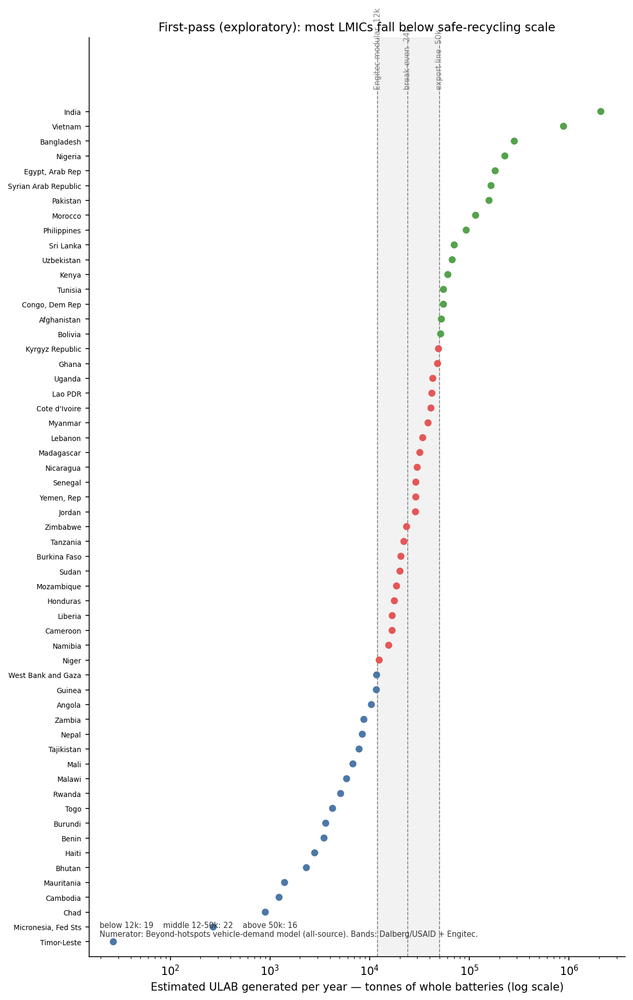
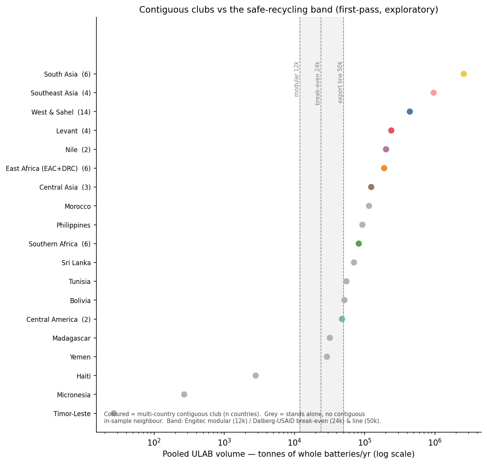
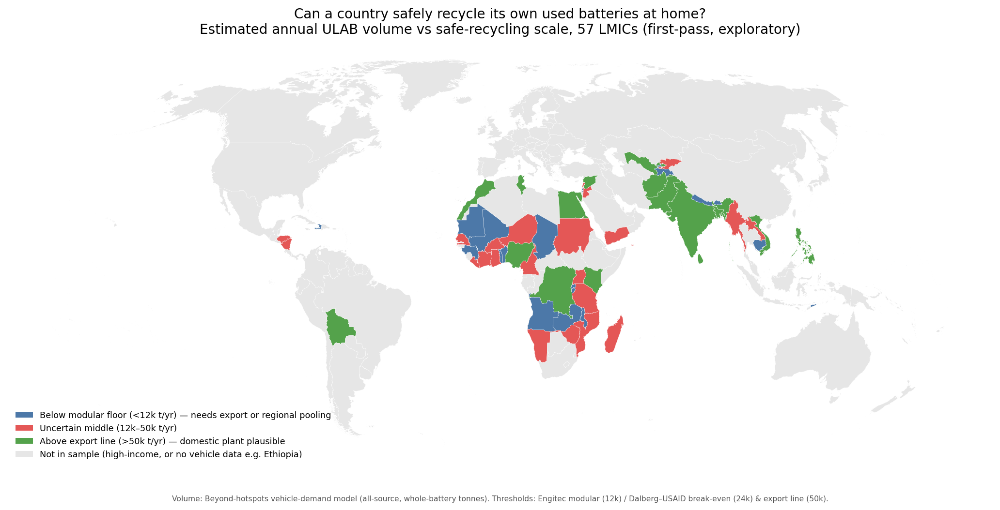
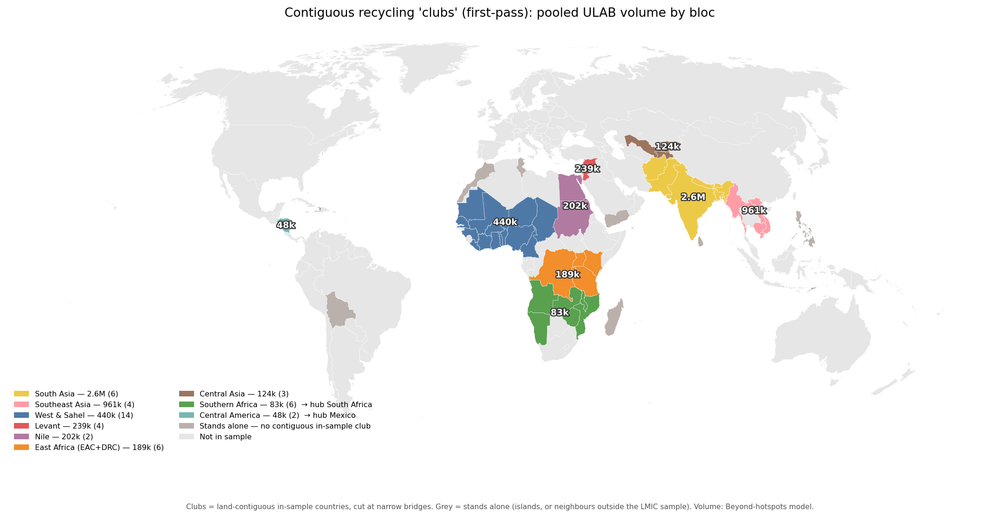

Which countries could safely recycle their own used lead-acid batteries?
Preliminary working figures · draft, subject to change
Safe lead-acid battery recycling only pays at scale. These first-pass figures estimate how much used battery (ULAB) volume each low- and middle-income country generates a year, and compare it with the scale a safe recycling plant needs — then ask which sub-threshold countries could reach that scale by pooling regionally.
1. Most countries are too small on their own

Estimated annual ULAB volume (whole-battery tonnes, log scale) for 57 low- and middle-income countries, against the scale at which safe recycling becomes viable. Of the 57, 19 fall below the modular-plant floor (~12k t/yr), 22 sit in the uncertain 12–50k band, and 16 clear the 50k line.
2. But pooling regionally reaches scale almost everywhere

Pooled volume by contiguous club — sets of countries that share land borders. Eight of the nine multi-country clubs clear the 50k line; Central America clears only break-even. Countries with no contiguous in-sample neighbour (islands, or those whose neighbours sit outside the sample) are shown in grey and stand alone — some clear on their own (Morocco, Philippines, Sri Lanka, Tunisia, Bolivia), three small islands do not (Haiti, Micronesia, Timor-Leste).
3. The viability map

Countries shaded by whether their own volume could plausibly support safe domestic recycling. The too-small (blue) and borderline (red) countries cluster geographically — usually next to a larger regional anchor.
4. Proposed regional “clubs”

Contiguous recycling clubs: each coloured cluster is a set of land-bordering countries, cut at the narrow bridges so no club spans a continent. Grey countries stand alone, with no contiguous in-sample partner. Two clubs lean on a hub outside the low- and middle-income sample — South Africa for Southern Africa, Mexico for Central America.